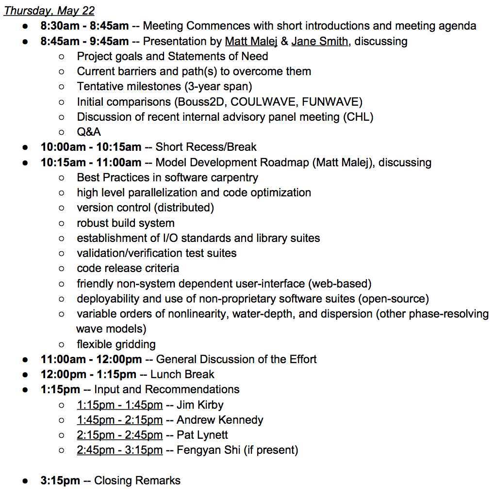
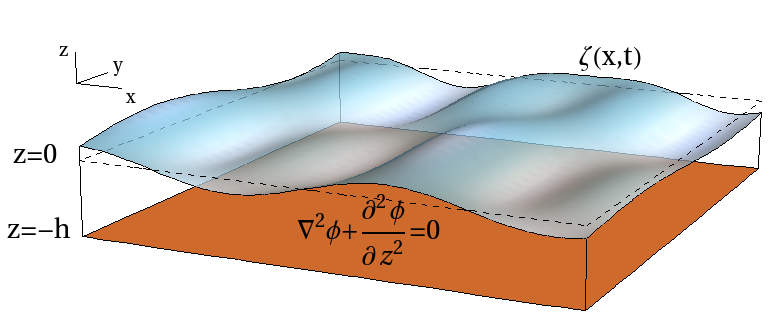

External Advisory Board Meeting
Boussinesq-type (Phase-Resolving) Numerical Wave Model Development Effort
May 22, 2014
Matt Malej & Jane Smith -- CHL
Meeting Agenda

Statements of Need
Applications
- Levee, flood wall, barrier, revetment, breakwater design (coastal and inland)
- Runup
- Overtopping
- Structure loading (wave forces)
- Frictional dissipation
- Complex geometries - reefs, levees, channels, etc.
- Inundation mapping - overland propagation and runup
- Harbor resonance, harbor and marine infrastructure modifications
- Transient waves (tsunamis, sneaker waves)
- Ship wakes
- Vessel generated waves and effects on shorelines
- Vessel generated bed velocities and shear stresses
Statements of Need (cont.)
- Validated and well documented model
- Computational considerations and parallel implementaion
- Computational efficienty (HPC systems)
- Deployability (less platform dependence)
- User-friendly interface that Districts can apply
- Dynamically coupled to other (CHL) models, e.g. phase-averaged models.
- Nonproprietary (Open Source) code base!
- In line with CHL Numerical Modeling Strategy.
Model Attributes and Limitations
| |
BOUSS-2D |
COULWAVE |
FUNWAVE |
| Accuracy |
\( (kh)^2 \) |
\( (kh)^2 \) |
\( (kh)^2 \) |
| Open Source |
NO |
YES (no license) |
YES (GNU General Public License) |
| Numerical Scheme |
Finite difference; 3rd order Crank-Nicholson |
Finite difference; Finite Volume; MUSCLE-TVD; 4th order in time |
Finite difference; MUSCLE-TVD; RK4 in time |
| Parallel |
NO |
YES (MPI) |
YES (MPI) |
| Grid |
Cartesian |
Cartesian |
Cartesian and Spherical Polar |
| Support Software |
SMS |
MATLAB (grid generation and visualization) |
MATLAB (grid generation and visualization) |
| LIMITATIONS |
- research-based code
- NOT open source ($$)
|
- Fortran77/90
- compiles only on PGI compilers (ERDC HPC)
- no version control
- community not very active (devel. and users)
- relies on MATLAB with additional toolboxes
- text-based input user-interface
- ASCII output; *software-carpentry
|
- few source files (needs modularity)
- ASCII files for output & text-based input
- post-processing relies on MATLAB toolboxes
- computes on 2 or 4 cores ONLY (MPI)
- system specific Makefiles NOT present
- *better software-carpentry practices
|
| |
|
|
|
Internal (CHL) Advisory Board
\(\to\) Test/Validation Cases, Capabilities, Field Group Suggestions.
Internal (CHL) Advisory Board -- Input from: Jeff Melby
- seamless set of tools that can answer a question/problem with variable level of fidelity
- need for sloped, vertical, stepped, and recurved structures
- usability classification of the model and technology limitations (when, where and for what
type of problems is this model suitable; need guidance on what level of fidelity must be
used and why)
- this model should be good for coastal set of problems (step levee, overtopping, runup,
etc.)
- consider the difference in applicability when it comes to: analysis (higher fidelity) & design
(lower fidelity).
- Good gridding tools are needed w/in SMS (Aquaveo)
- 1D transect model to replace WHAFIS is needed
- Problems that should be addressed by this effort/model are (see CEM Chap 6):
- diffraction and harbor resonance
- conical island
- porous and rough surface
- partial depth walls, vented walls
- levee
- runup, overtopping and transmission, vegetation
Internal (CHL) Advisory Board - Input from: Chris Massey
- user friendly web-based interface
- need to get robust post-processing tool up early
- FEMA and NCAR needs a good model setup (SMS has been doing that)
- you need a matrix/table with models and their areas of applicability
- (model coupling) need tools to go from phase-averaged models to phase-resolving model
- modularize and deglobalize the code (make local)
- have setup, grid generation, and postprocessing scripts standardized and
distributed with nonproprietary packages (do NOT rely on expensive MATLAB
toolboxes)
Internal (CHL) Advisory Board - Input from: Brad Johnson
- usability is crucial but generally not fun to implement/document
- model needs more of emphasis/attention on wave breaking (not always adhoc methods)
- studying ocean morphology and bottom topography via phaseresolving wave models
- nearshore applications of interest:
- wave breaking
- runup
- turbulence enhanced friction
- mixed time scales
- swash zone (critical)
- flexibility with design and implementation of boundary conditions (offshore) and having
models coupled and interacting at the boundary and/or nested grids
- increasing value of the $kh = \frac{h}{\lambda}$ to explore other regions of depth validity (not just shallow water)
General Discussion with Q&A
...short recess
Model Development Roadmap
- High-level parallelization and optimization of target source code (FUNWAVE) - have fewer stand alone numerical models out there!
- Support for distribution on moder HPC (High Performance Computing) systems, such as ERDC's Garnet.
- Establishment of I/O standards (XDMF - xmf, HDF5), code release criteria, validation/testing, and distributed version control (Git).
- Utlization of a robust build system (e.g. HashDist) that allows for seamless support for continuously changing environments/system and external packages or libraries.
- Friendly user-interface that is not system dependent (e.g. web-based IPython Notebook)
- Varying orders of model accuracy and nonlinearity (order of expansion), as well as shallow, intermediate/finte, and deep water limits interacting models.
- Flexible gridding, although the added complexity could counter balance reductions in computations cells/elements for typical Corps applications.
Boussinesq-type (Weakly Nonlinear) Equations
Boussinesq-type equations rely on removal of third dimension \(3D \to 2D\) by expanding the canonical variable (velocity potential \(\phi\)) about an arbitrary depth \(z_\alpha\). Plus the dispersion relation \(\omega^2 = gk \tanh(kh) \) is expanded in powers of \(kh\), thus for small \(kh\) one can write
\[ \tanh(kh) = kh - \frac{1}{3}(kh)^3 + \frac{2}{15}(kh)^5 - \frac{17}{315}(kh)^7 + \mathcal{O}((kh)^9) \]
The volicty potential can be written as
\begin{equation}\label{eqn:velPotential}
\phi = \phi_\alpha + \mu^2\left[ (z_\alpha-z)\nabla \cdot (h\nabla\phi_\alpha) + \frac{1}{2}({z_\alpha}^2 -z^2)\nabla^2\phi_\alpha \right] + \mathcal{O}(\mu^4)
\end{equation}

Where \( \ \mu = kh \ \) and \( \ k = \frac{2\pi}{\lambda}\). With free-surface BCs you recover evolution equations for \(\phi_t\) and \(\zeta_t\).
Additional Models of Interest (3rd order)
Higher-Order Spectral Method (Fourier and Chebyshev) with full dispersion relation and variable order of nonlinearity \(\left(\epsilon=ka=\frac{2\pi\, a}{\lambda}\right)\) would yield evolution equations accurate to 3rd order in wave steepness and have no depth restriction (shallow, finite, deep)
\begin{equation}\label{Fully2D_Model_A}
\frac{\partial \zeta}{\partial t} = - \mathcal{L}[\Phi] - \nabla (\zeta \nabla \Phi) - \mathcal{L}[\zeta \mathcal{L}[\Phi]] - \nabla^2 \left( \frac{\zeta^2}{2} \mathcal{L}[\Phi] \right) - \mathcal{L} \left[ \frac{\zeta^2}{2} \nabla^2 \Phi + \zeta \mathcal{L}[\zeta \mathcal{L}[\Phi]] \right] + O(\epsilon^4),
\end{equation}
\begin{equation}\label{Fully2D_Model_B}
\frac{\partial \Phi}{\partial t} = - g\zeta - \frac{1}{2} |\nabla \Phi |^2 + \frac{1}{2} \left( \mathcal{L}[\Phi] \right)^2 + \mathcal{L}[\Phi] \left( \zeta \nabla^2\Phi + \mathcal{L}[\zeta \mathcal{L}[\Phi]] \right) + O(\epsilon^4),
\end{equation}
where the operator \(\mathcal{L}\) takes on the following form in Fourier \((\mathcal{F})\) space
\[
\mathcal{F} \left[ \, \mathcal{L}[\Phi] \, \right] = - \kappa \, \tanh (\kappa h) \hat{\Phi}, \ \ \ {\rm{where}} \ \ \
\kappa = \sqrt{k_x^2 + k_y^2} \ \ \ \ {\rm{and}} \ \ \ \ \hat{\Phi} = \mathcal{F}[\Phi].
\]
Fast Pseudo-Spectral Numerical Scheme (via FFT)
\begin{equation}\label{Fourier_Series_A}
\zeta(x,y,t) \ = \ \sum_{m=-\frac{N_x}{2}}^{\frac{N_x}{2}} \sum_{n=-\frac{N_y}{2}}^{\frac{N_y}{2}} a_{mn}(t) \, {\rm{e}}^{{\rm{i}}(m \Delta k_x \, x+n \Delta k_y \, y)}
\end{equation}
\begin{equation}\label{Fourier_Series_B}
\Phi(x,y,z=\zeta,t) \ = \ \sum_{m=-\frac{N_x}{2}}^{\frac{N_x}{2}} \sum_{n=-\frac{N_y}{2}}^{\frac{N_y}{2}} b_{mn}(t) \, {\rm{e}}^{{\rm{i}}(m \Delta k_x \, x+n \Delta k_y \, y)}
\end{equation}
Develop./Testing/Valid. Progress
- Computational Framework
- Private Github Repository: https://github.com/malej/phaseWave
- Project Development Wiki: http://malej.github.io/BoussDevWiki
- System-specific builds (Makefiles) for Linux, Mac OSX, Garnet-gnu/intel/pgi
- External Packages included with distribution framework - Open Source (Python, IPython, Sphinx, SciPy, NumPy, Cython, Pandas, PyTables, FFTW, XDMF, Nose, MPICH, MPI4py, Matplotlib, etc.)
- FUNWAVE
- Model built on Linux and Mac OSX (GNU and Intel compilers) and ERDC Garnet.
- Verified supplied test example (serial, parallel, cartesian, polar).
- Postprocessing in MATLAB done with supplied scripts (toolbox permitting).
- Sample web-based UI built via IPython Notebook (setup, run, postprocessing).
- COULWAVE
- Built on ERDC Garnet with PGI compilers ONLY.
- Validated several test cases with MATLAB scripts (toolbox permitting).
Planning to test: (i) breaking waves on beach, (ii) wave shaoling for random waves, (iii) wave propagation overa a shaol, (iv) wave runup on a beach/shelf, (v) solitary waves on conical island, (vi) various wave inputs: (a) sinusoidal monochromatic wave, (b) modulated wavetrain, (c) Stokes waves, (d) solitary waves, (e) realistic wave field (e.g. JONWSAP spectrum with directional distribution) -- all 1D and 2D oblique.
External Advisory Panel
\(\to\) Research and Numerical Model Development Strategic Plan Input
Thank you for your attention...
Now we need your input and suggestions for test cases, capabilities, field group formation/personnel.*